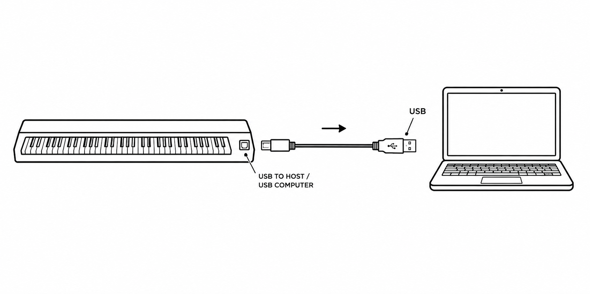

Connect your piano
How to connect

- Find the USB TO HOST or USB COMPUTER port on your piano.
- Connect your piano to the computer with a USB cable.
- Turn your piano on.
Let’s check the connection
Press any key on your piano
Ready
Your computer is receiving a signal from the piano ✓
Allow browser access to MIDI
When you connect for the first time, your browser may ask for permission to use MIDI devices. Choose Allow.
MIDI access is blocked
Allow MIDI access for play12.pro in your browser settings, then try again.
MIDI keyboard not found
Check the USB connection and make sure your piano is turned on.
Safari does not support Web MIDI
Open Play12 in Chrome, Edge, Yandex Browser, or another Chromium browser to connect your piano.
MIDI connection is not supported
This browser cannot connect to a MIDI keyboard. Open Play12 in a browser that supports Web MIDI.
Listen to When the Saints Go Marching In
Listen to how the melody sounds
Press Play or Space
Notes move down toward the piano ↓
Always visible. Play it with your mouse. ↓